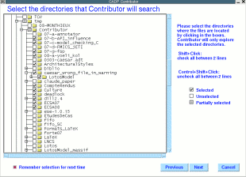
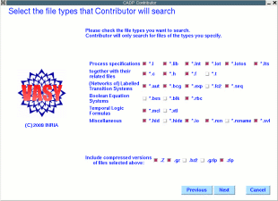
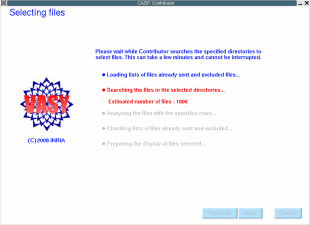
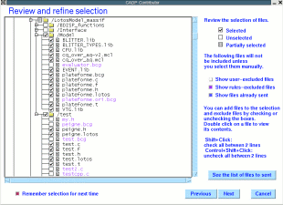
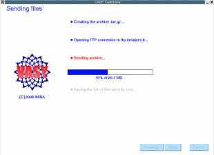

The files that you contribute are related to CADP, such as LOTOS specifications, BCG graphs, MCL or XTL formulas, Boolean equation systems, etc. They are treated as confidential and used only by the CADP team for testing future versions of CADP.
contributor runs on your local machine, making no network connection except to send your contribution to the CADP team by FTP at the end of processing.
You have complete control over when you use contributor. You choose the directories that contributor is allowed to search, and the types of files (by specifying the file extensions) that contributor is allowed to consider. To refine this set of directories and files, contributor has also built-in rules that attempt to select only those files that are relevant for testing CADP tools.
Additionally, you have an opportunity to review the set of selected files and to exclude any that you do not wish to send.
contributor does not send files you have previously contributed (to avoid duplicates) nor files that you have already excluded during a previous invocation of contributor.
Running contributor only takes a few minutes, and it has no impact on other CADP components. You are recommended to run it every six months and on completion of significant work, which will help the CADP team to keep the regression test suite up to date and in line with the needs of CADP users. Use of contributor is completely optional, but is greatly appreciated.
~/.config/cadp/contributor)
information about the preferences you specified for contributor, such as
the list of directories to search, the file extensions to consider, the
files you specifically excluded, the files already sent, etc. This information
is used the next time you use contributor, but you can override it.
contributor
has a built-in set of rules that exclude files that seem unrelated to CADP.
These rules are defined for each file extension. For example, a C program
(with a ".c" or ".h" file extension) will only be selected if it contains
certain strings (e.g., the string "CAESAR"). There are also limits on the
size of files that can be selected. User selection has precedence over the
built-in rules, so you can decide to send any file, even if the rules would
otherwise exclude it from the contribution.
1. Select the directories where the files to send are located. If you are using contributor for the first time, your home directory is included by default.

2. Select the file types (file extensions) of the files to be sent.

3. Based on your selection contributor computes a proposed list of files to be sent, by applying your preferences and the built-in rules, not selecting files that have already been sent or files that you previously excluded.

4. Review the proposed list, and add or exclude files to get the final list you want to send to the CADP team. You can view the content of a file by double-clicking on its name. Also, by checking the relevant boxes on the the right of the window, you can view the files that are excluded by your preferences (user-excluded files), the files that are excluded by the built-in rules (rules-excluded files), and the files that have already been sent.

5. Using your final selection list, contributor creates a .tar.gz archive
containing all the files selected, and sends it by FTP to ftp.inrialpes.fr.

Note: This archive is
stored in the directory specified by the $CADP_TMP environment variable,
or in /tmp if this variable is undefined. If the FTP transfer via contributor
fails, retry the FTP transfer manually. If this is still unsuccessful, please
contact the CADP team to arrange another method of transfering the file.
Directives for installation are given in files $CADP/INSTALLATION_*.
Recent changes and improvements to this software are reported and commented in file $CADP/HISTORY.